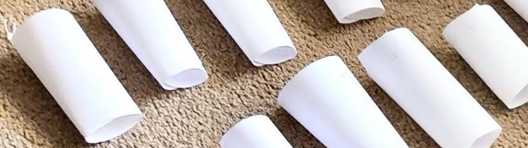

Experimental Design on a Phone Speaker's Volume
Skills: Experimental Design, Hypothesis Testing, Statistical Analysis, JMP, Data Collection
Objectives: Experimented on how lengths of paper cones (megaphone-shaped) and different types of paper can affect the volume of a phone speaker.
Approach:
- Carried out a complete randomized design (CRD) as our design structure based on 2 factors: length of paper cones (21.5cm, 16.5cm, 11.5cm) and type of paper (cardstock and printing paper).
- There were 6 treatments with each treatment having 4 replicates. A total sample of 24 paper cones were recorded. Statistical Analysis was completed in JMP Sofware.
Results:
- Paper length contributed the most to the decibel output of the phone speaker. Both cardstock and printer paper with length 16.5 cm and 20.5 cm had a larger decibel output than 11.5 cm.
- As length of the cones increases from 16.5 to 20.5cm , the mean decibel output for both lengths get close to each other and the type of cones becomes irrelevant in terms of volume improvement.